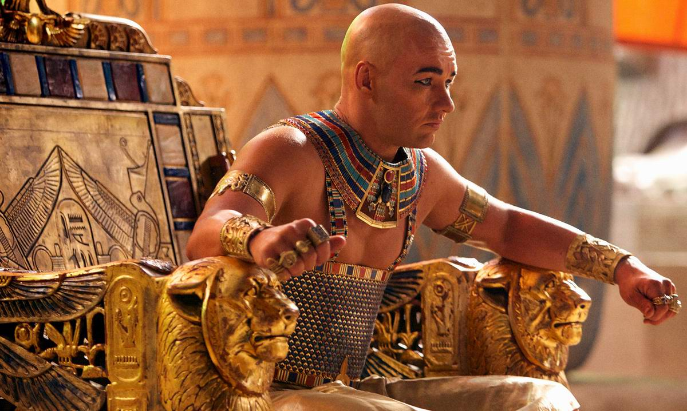
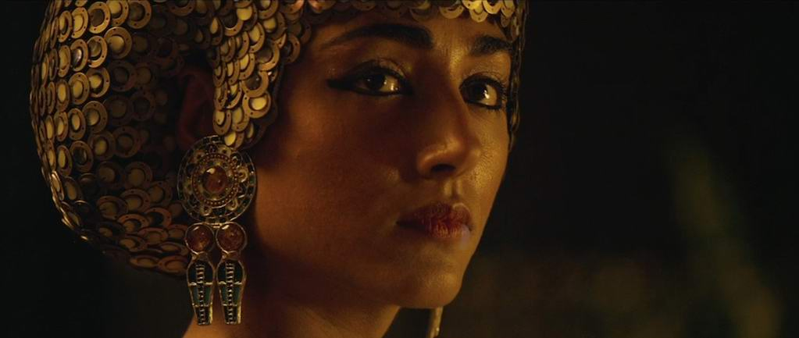
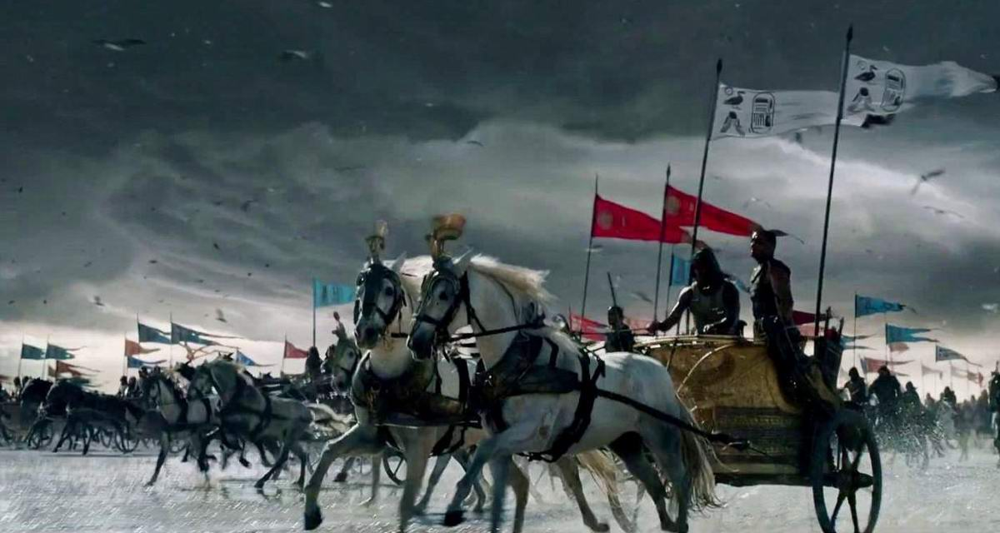
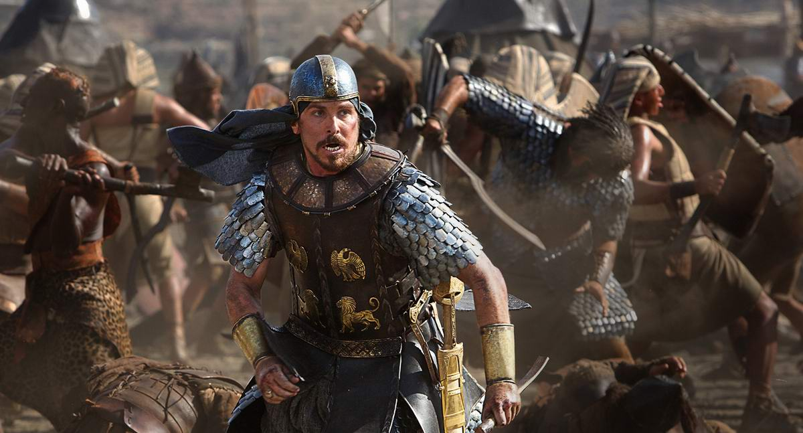
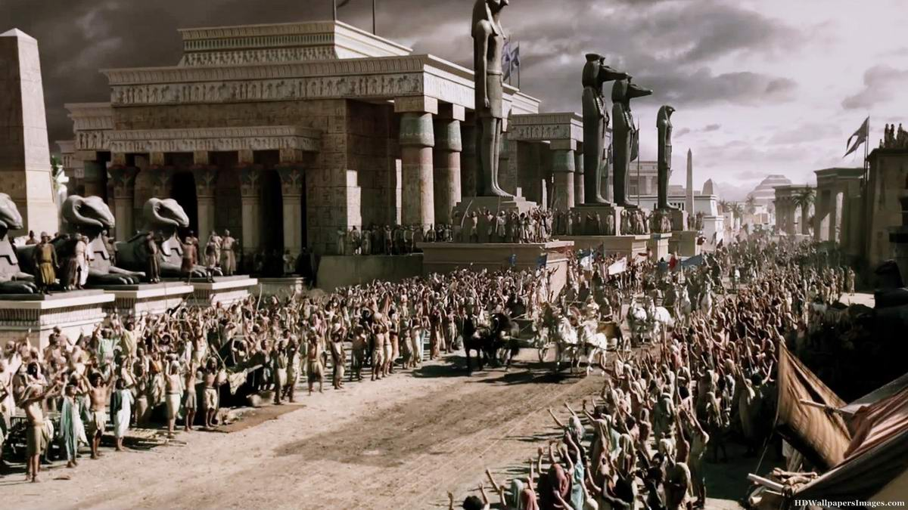
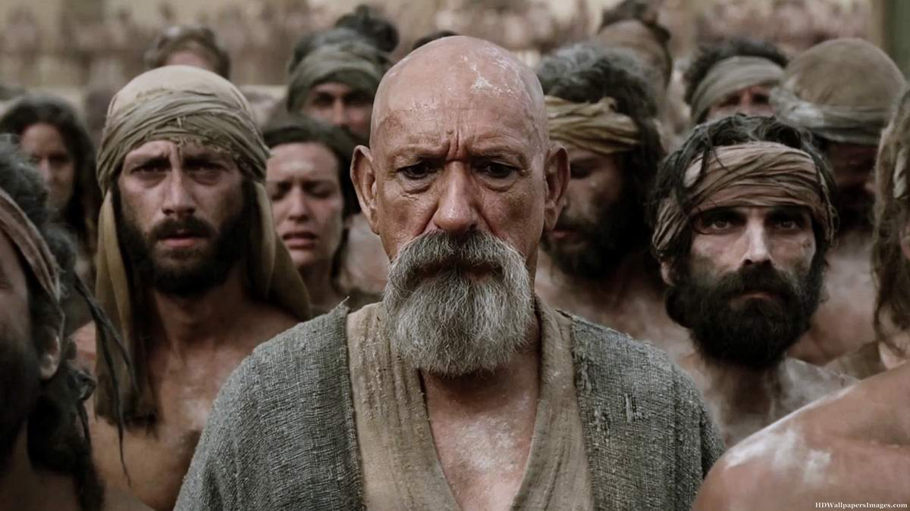
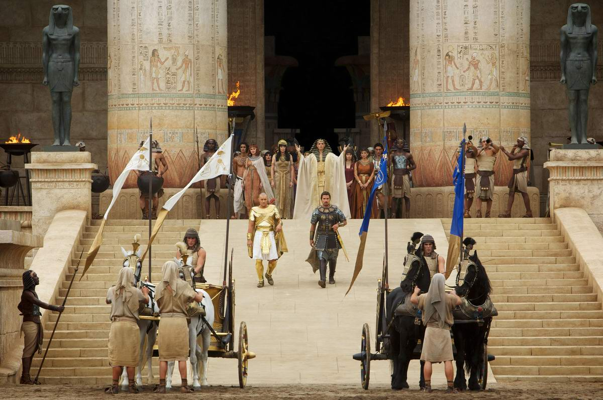
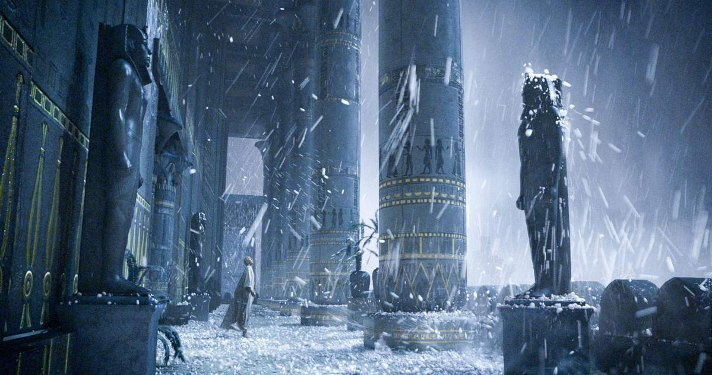

Исход, который чуть не запретили, или как Ридли Скотт евреев из Египта спасал
Писание учит: «Если извлечешь драгоценное из ничтожного, то будешь как Мои уста» (Иеремия 15:19). Поэтому я предложу свои мысли, а вы с ними либо согласитесь, либо нет.
Автор: Анатолий Эмма из материалов cis.jewsforjesus.org
На экраны страны с большим без преувеличения успехом вышел фильм «Исход: цари и боги». Этот фильм – посвящение Ридли Скотта своему брату Тони Скотту, который покончил жизнь самоубийством на 68-ом году жизни. Считается, что именно смерть брата подтолкнула Ридли подумать о духовном, и так он пришел к созданию фильма «Исход». подробности см. здесь

Кто еще не смотрел этот фильм, еще имеет такую возможность. Хотя бы для того, чтобы иметь свое мнение о его содержании и смысле. Уже сейчас критики дают этому фильму 8 из 10 возможных баллов, и это достаточно высокая оценка.
Фильм потрясает своими панорамными съемками, костюмами, актерским составом и, конечно, современной графикой...
Посмотрев этот фильм, лично для себя я отметил, что это – картина с большой буквы. Четко прорисованы целые драматические моменты из жизни фараона и Моисея, их соперничество и превозношение, ненависть и боль, страдания. Фильм просто кричит нам о двух культурах: евреи – рабы, египтяне вроде бы не рабы, но и совершенно не свободные люди. Их быт, их жизнь и житейские проблемы – все это показано очень наглядно.

Конечно, для тех, кто внимательно читает Библию, фильм «Исход» далек от канона. Это не библейский фильм, снятый от «А» до «Я» по Писанию. И те, кто сверяет подобные фильмы с Писанием по принципу «не пропадет ни одна запятая», будет глубоко разочарован. Но мы должны понимать, что перед нами личный взгляд режиссера Ридли Скотта и его коллег. Многое здесь показано «между строк». Эдакая фантазия, являющая многое «упущенное» из Писаний. И это вызывает смятение у многих верующих. Как сказал классик, «зритель – лучший критик».
И поскольку многие уже написали свое мнение об этом фильме, мне бы хотелось высказать о нем несколько мыслей. Как говорится, имею право!
Писание учит: «Если извлечешь драгоценное из ничтожного, то будешь как Мои уста» (Иеремия 15:19). Поэтому я предложу свои мысли, а вы с ними либо согласитесь, либо нет.

Взгляд Голливуда
Как я уже сказал, этот фильм – уникальный взгляд режиссера Ридли Скотта. И мне он очень и очень понравился, особенно в первые 45-50 минут. Описание Моисея в Египте, его карьеры и роста были показаны просто превосходно. Кстати и древние иудейские предания говорят о Моисее, который жил при дворце, был генералом западных границ Египта, а не только тем бородатым мужиком, которого мы видим на картинках и представляем себе с посохом, с мудрым лицом, седовласой бородой и волосами. Уверен, что выросшим при дворце он выглядел точно так, как любой офицер египетской армии, думающий и сформировавшийся как язычник, как египтянин. Поэтому фильм очень реалистично передает его облик. Этот фильм показал нам образ Моисея, о котором многие из нас наверняка и не думали, его быт, его характер и его жизнь.

Экранизация Библии
Еще один интересный момент – как безбожный Голливуд пробует экранизировать Библию. Да-да, именно пробует. Выходит это, с нашей христианской точки зрения, конечно, корявенько, но ведь они пробуют – и это приятно. Голливуд выделяет бюджет в 140 млн. долларов, актеры с мировым именем пробуют показать истории Писаний – все это достойно похвалы. И хотя это не значит, что мы уверовали в эту постановку, отвергнув саму книгу Исход, но это попытка, друзья, и здесь есть, за что им аплодировать, на мой взгляд.

Голос Бога и других богов с экрана
Красной нитью через весь фильм проходит голос Бога и других богов. Мы видим великую империю с множеством богов. Сам фараон кричит в одной из сцен: «Я сам бог!» и это не ново – фараоны действительно считались богами в Египте. Вообще, весь фильм пропитан ментальностью поклонения древним божествами, жрецов, которые толкуют то одно, то другое в попытках понять происходящие и пытаются изменить ту или иную ситуацию. В середине фильма на арену выступает Бог Израиля. О Нем не заявлено как о великом Боге и Спасителе Израиля, но это становится вполне очевидным. Например, в одной из драматических сцен фараон, обращаясь к Моисею, искренне спрашивает его: «Моисей, ты слышишь Бога?» Моисей говорит «Да». Тогда фараон спрашивает: «А какого из них?»
Дальше идет сильное противостояние между Богом и другими богами... Жрецы пытаются переломить суды Господа над Египтом, но ничего не выходит. Бог Израиля твердо решил покарать фараона и его страну, о чем подробно можно прочитать в самой книге Исход. Фильм отлично открывает иную реальность, духовный мир. Здесь говорится популярным языком: смотри, есть невидимый мир, иной, духовный… он гораздо выше того, что видишь и чувствуешь ты, человек!

Мой народ – евреи
Мне, как еврею, было очень приятно видеть, что фильм снят о моем народе, о его страданиях и борьбе, о том, что Бог не забыл Своих слов и как Он дал нам свободу. Я вспоминал слова пророка, который жил после Моисея: «Забудет ли женщина грудное дитя свое, чтобы не пожалеть сына чрева своего? но если бы и она забыла, то Я не забуду тебя» (Исайи 49:15). Бог не забыл и не забудет мой народ, с которым у Него завет. Во время фильма я ощущал, что и мои предки, мои праотцы по плоти были там, и я был в них, и я рад, что сегодня вспомнили о моем народе, прошедшим истребление, борьбу и получившим свободу от Господа. Еще у меня прошла такая яркая ассоциация: в январе мы вспоминаем дни Холокоста, т.е. тех из нас, кто погиб, и о тех, кто выжил. Евреи проходили Египет множество раз. А фараон просто был одним из первых антисемитов. Сегодня много грязи говорят о нашем народе, об Израиле, а этот фильм – одно из тех повествований, в котором показывается, что было с нами на самом деле.

Библейская суть
Библейская суть в этом фильме раскрыта, конечно, не полностью, но повторюсь, что этот фильм – взгляд режиссера, его личное дело и личная попытка, его внутренний мир от прочтения библейской книги Исход. Но все-таки фильм отображает Моисея как сильного генерала, воина, принца Египта, который становится неким изгоем и трансформируется в послушного слугу Бога и своего народа. Он принимает вызов старейшин и Всевышнего лично для себя! Разве не в этом суть Писаний? Не в преобразовании и принятии воли Всевышнего, как это сделал Моисей?

Мы должны понять одно: этот фильм не становится основой нашей веры, это взгляд Ридли Скотта. Лично я использую этот фильм как возможность поразмышлять над увиденным и поговорить с теми неверующими, которых заинтересует данная картина. Моя вера не поколебалась от неточностей фильма, моя вера не стала крепче от его интересных моментов. Просто я понял: чтобы быть устами Бога, я даже из ничтожного должен брать полезное.
см. "Исход: Цари и Боги" - Официальный трейлер
от редактора: для любителей разгромных статей - ЗДЕСЬ читайте рецензию на фильм ученого - египтолога Виктора Солкина